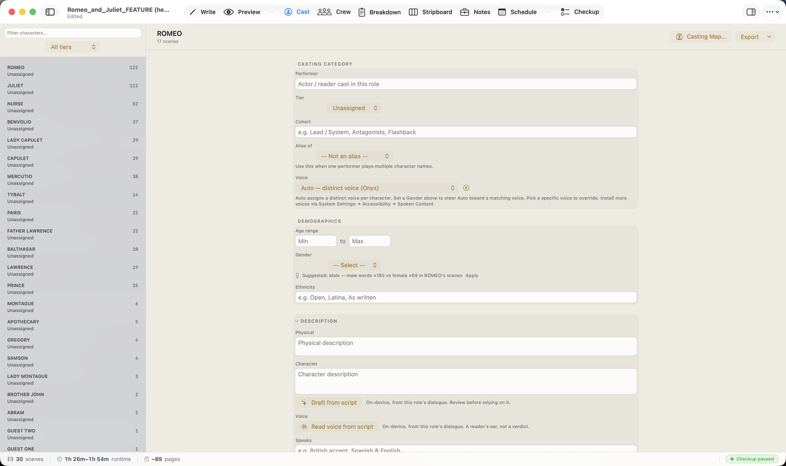
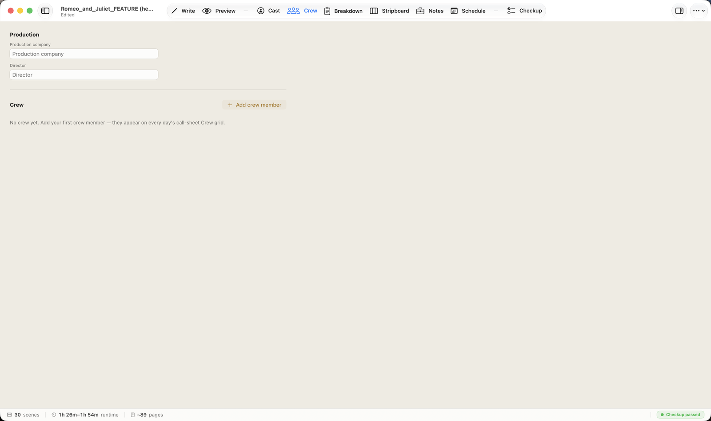
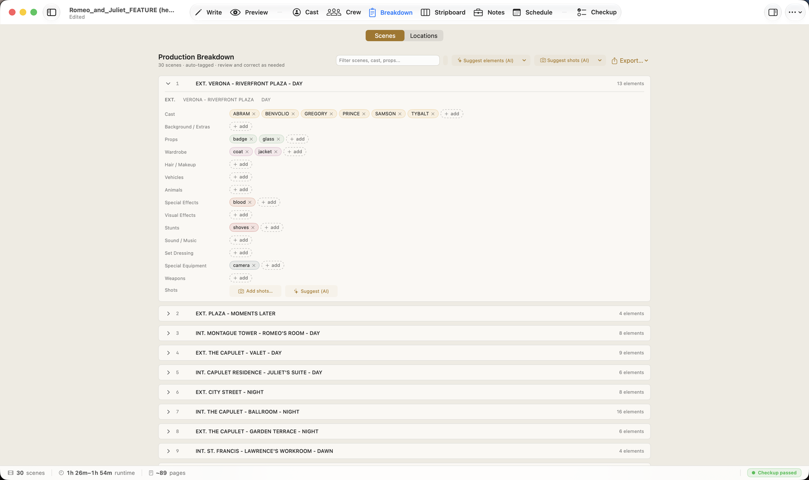
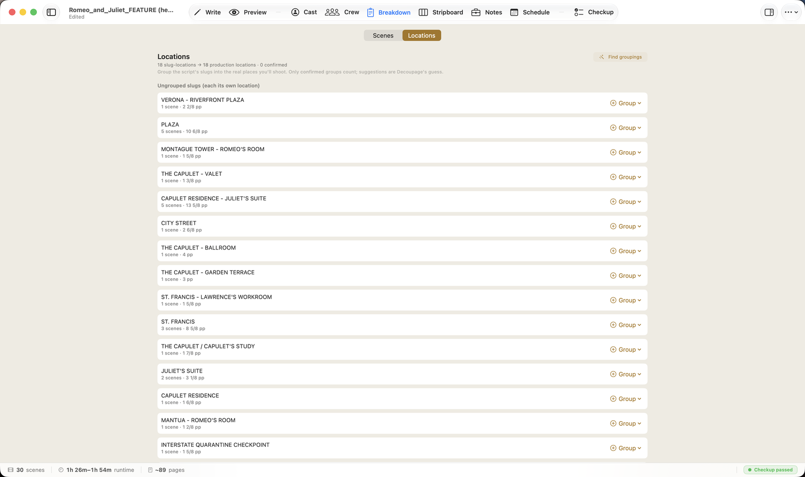
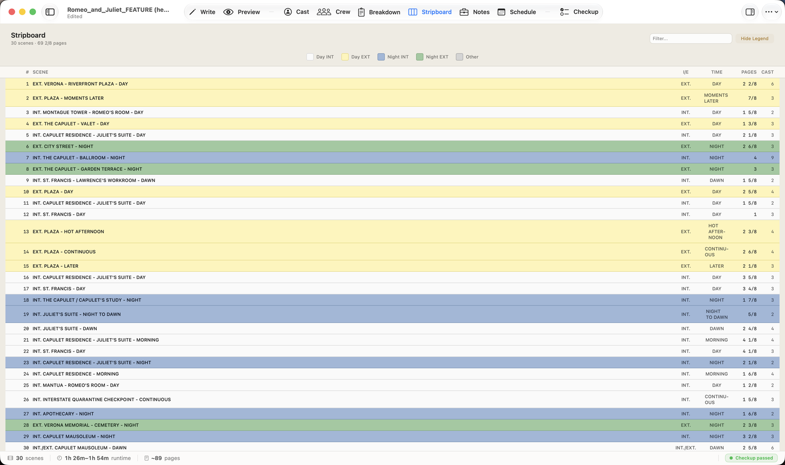
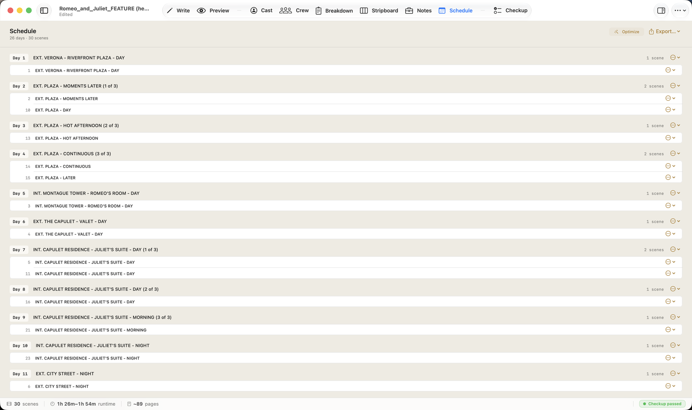

Cast (⌘4)
The Cast tab lists every speaking character Decoupage found, with the number of scenes each appears in. Click a character to open their profile.

A profile holds what a casting director needs:
- Casting category — the performer cast in the role, a Tier (Lead, Supporting, Day Player, Featured, Background), a Cohort label, and Alias of (use this when one performer plays two character names).
- Demographics — age range, Gender, ethnicity.
- Description — physical and character notes.
- Voice — the voice used for this character in Read Aloud, with an audition button to hear it.
On-device AI helpers (all optional, all confirm-first):
- Draft from script 🔒 — drafts a character description from the role's own dialogue.
- Gender: Suggested… / Apply — a deterministic guess from the name + dialogue evidence, with an Infer with AI 🔒 option; you Apply or dismiss.
- Read voice from script 🔒 (macOS 27) — a reader's-ear take on how the character sounds, shown in a transient "Voice read" box you can dismiss.
Use the in-tab Export menu for a Cast List (PDF / Markdown / CSV) and the Casting Breakdown reports (submission and production versions).
Crew (⌘3)
The Crew tab is where your production company, director, and crew live. Add crew members here and they appear on every day's call-sheet crew grid.

It starts empty — add your first crew member and Decoupage carries them through the schedule and call sheets, so you enter each person once.
Breakdown (⌘5)
The Breakdown tab is the heart of prep. Decoupage has already auto-tagged every scene with the elements it found — cast, props, wardrobe, vehicles, special effects, stunts, and more. Your job is to review and correct.
The tab has two panes (toggle at the top): Scenes and Locations.
Scenes shows each scene with its tagged elements as chips. Add or remove a chip in any category, add shots, and the numbers flow into your reports.

Two 🔒 on-device AI helpers sit at the top: Suggest elements proposes elements the keyword pass may have missed, and Suggest shots drafts coverage for a scene. Both are review-then-accept.
Locations is the consolidation pane. A script has many scene headings (slugs) that map to the same real place — "INT. CAPULET RESIDENCE — JULIET'S SUITE — DAY" and "…— NIGHT" are one location you'll shoot. Group the slugs into the actual places; only confirmed groups count.

Find groupings 🔒 proposes groupings for you to confirm or dismiss.
The in-tab Export menu produces breakdown sheets, department pull lists, background reports, and shot lists (PDF and CSV).
Stripboard (⌘6)
The Stripboard is the classic color-coded scene board — one strip per scene, colored by interior/exterior and day/night, with columns for scene number, heading, I/E, time, pages, and cast count. It's a read-only, at-a-glance view of the whole shoot; toggle the legend to read the colors.

Schedule (⌘8)
The Schedule tab organizes your scenes into shoot days. Decoupage packs scenes by location so you're not bouncing across town — scenes at the same place land on the same day.

- Optimize re-packs the days for efficiency (a good starting point you then adjust).
- Add Missing Scenes pulls any script scenes not yet scheduled into an Unscheduled bucket.
- Per-day actions — rename a day, move it earlier/later, or merge it into another.
- Per-scene actions — send a scene to Unscheduled, start a new day after it, or split the day.
Export a Day-out-of-Days (CSV / PDF) and a Shooting Schedule (PDF / CSV) from the in-tab Export menu.
Shoot Calendar — put real dates on your days
Click Shoot Calendar… to turn each "Day N" into a real calendar date. Set your first shoot day, which weekdays you shoot (Monday–Friday by default), and any dark dates (holidays, hiatus) to skip. Decoupage counts forward from your start date, skipping weekends and dark days, so every shoot day gets its true date — and if a day needs a date of its own (a pickup after a gap), you can pin it.
Set the calendar once and the date and day-of-week appear automatically everywhere the shoot shows up: inline on each day here, on your Call Sheets ("Monday, July 20, 2026"), in the Shooting Schedule (dated day headers plus a Date column in the CSV), and in the Day-out-of-Days CSV. One input keeps every report in sync.
Calendar view
Flip the List / Calendar switch at the top of the Schedule tab to see your whole shoot laid out on a month calendar. Each shoot day is a card — its date, day number, scene count, and location — with today ringed and dark days greyed. Click a day to see its scenes and cast at a glance. You still plan in the list; the calendar shows you the shape of it.
- ✓Cast (⌘4): character profiles — tier, demographics, voice, casting reports. AI can draft descriptions, infer gender, and read a voice — all confirm-first, on-device.
- ✓Crew (⌘3): production company + director + crew roster → call sheets.
- ✓Breakdown (⌘5): auto-tagged scene elements (Scenes pane) + slug→location grouping (Locations pane); AI suggests elements and shots.
- ✓Stripboard (⌘6): the color-coded board; toggle the legend.
- ✓Schedule (⌘8): scenes packed into shoot days by location; Optimize, then refine; set a Shoot Calendar for real dates on every day and report; flip to the Calendar view to see the shoot on a month grid; export Day-out-of-Days and the Shooting Schedule.